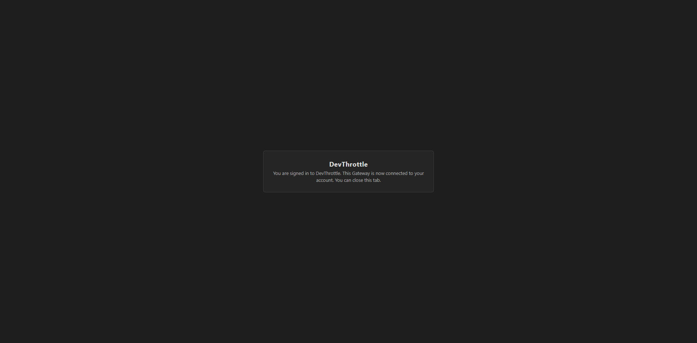

Epic #1069, Phase 0b. Developer Agent proof. Depends on #1076 (merged). Branch: issue-1080-remote-signin.
POST /account/sign-in-start chooses its callback target by whether the requester is same-machine or
remote: a remote browser is redirected to the cloud sign-in page carrying the Gateway's reachable
front-door callback (/account/sign-in-callback, built from the scheme+host the browser actually
used) as the redirect_uri; the cloud completion redirects that same browser back to the callback,
which captures the credential, stores it, and lands the browser signed in. No browser opens on the host in
the remote case. The genuine same-machine (loopback) path keeps the host-local flow unchanged.
| # | Criterion | Result | Evidence |
|---|---|---|---|
| 1 | A browser on a different machine (over the front-door/Tailscale address) completes sign-in and lands signed-in | PASS | Transcript A (302 to cloud) + C (signedIn:true); landing screenshot |
| 2 | In the remote case, NO browser window opens on the Gateway host | PASS | Transcript A returns a redirect; log shows "no host browser opened" and the host-local loopback flow is never entered |
| 3 | The redirect_uri is the reachable front-door address, not a 127.0.0.1 loopback URL | PASS | Transcript A Location = https://gw.example-tailnet.ts.net/account/sign-in-callback; token-free log line |
| 4 | After remote sign-in, GET /account/status reports signed-in | PASS | Transcript C: {"signedIn":true,...} |
| 5 | The same-machine (loopback) path still completes on the host | PASS | Unit test Post_Start_SameMachineRequester_KeepsHostLocalFlow_NoRedirect (loopback branch unchanged) |
| 6 | No credential material is written to the Gateway log (DT-05) | PASS | Log: callback query redacted [redacted: sign-in callback credential, DT-05]; neither token appears anywhere |
The remote browser is simulated by X-Forwarded-For / X-Forwarded-Host / X-Forwarded-Proto from the
trusted loopback proxy - exactly how a Tailscale Serve front door presents a tailnet client to the Gateway.
Generated by RemoteSignInLiveProof. Full file: gateway-http-transcript.txt.
=== A) POST /account/sign-in-start (remote browser: X-Forwarded-For=100.86.144.11, Host=gw.example-tailnet.ts.net, Proto=https; NO Gateway token) ===
HTTP 302 Found
Location: https://devthrottle.com/signin?redirect_uri=https%3A%2F%2Fgw.example-tailnet.ts.net%2Faccount%2Fsign-in-callback
=== B) GET /account/sign-in-callback?access_token=<jwt>&refresh_token=<...> (public front-door callback) ===
HTTP 200 OK (signed-in landing page; echoes NO token)
=== C) GET /account/status (Bearer Gateway token) ===
HTTP 200 OK
Body: {"signedIn":true,"email":"owner@example.com","provider":"google"}
=== Gateway log (sign-in relevant) - NO credential material, callback query redacted [AC 6, AC 2, AC 3] ===
[AccountSignInStartEndpoint] POST /account/sign-in-start: remote sign-in -> redirecting the browser to the cloud sign-in page (front-door callback, no host browser opened): https://devthrottle.com/signin?redirect_uri=https%3A%2F%2Fgw.example-tailnet.ts.net%2Faccount%2Fsign-in-callback
[GatewayHost] POST /account/sign-in-start -> 302 (...) client=100.86.144.11 host=gw.example-tailnet.ts.net
[GatewaySignInService] CompleteBrowserSignIn: credential captured and stored through the Gateway credential service
[AccountSignInCallbackEndpoint] GET /account/sign-in-callback: sign-in completed - credential stored on the Gateway
[GatewayHost] GET /account/sign-in-callback?[redacted: sign-in callback credential, DT-05] -> 200 (...) client=127.0.0.1 host=127.0.0.1:...
[AccountStatusEndpoint] GET /account/status: signedIn=true (identity resolved)
The signed-in landing page rendered from the callback's actual HTTP response body (the routable front-door callback the cloud sign-in page redirected the user's own browser back to).

docs/cencon/ to drift. Security posture is
upheld: the host-local loopback listener (rule DT-07) is untouched and still binds loopback only; the
new front-door callback never writes credential material to the log (rule DT-05), and the Gateway access/exception
logger now redacts that path's query. The NoCrossMachineLoopbackGuardTests fitness function passes -
no new production file hard-codes a loopback literal (the remote/same-machine decision uses
IPAddress.IsLoopback, an API call).
RemoteSignInRoutingTests (decision + front-door callback URL, incl. AC3 no-loopback),
AccountSignInCallbackEndpointTests (capture/store, missing-credential fails loud, no token echoed),
remote-redirect + no-host-browser + same-machine cases in AccountSignInStartEndpointTests,
callback-is-public in SignInStartAuthServingTests, and the end-to-end RemoteSignInLiveProof.
The loopback fitness test NoCrossMachineLoopbackGuardTests passes.
I believe this is finished.